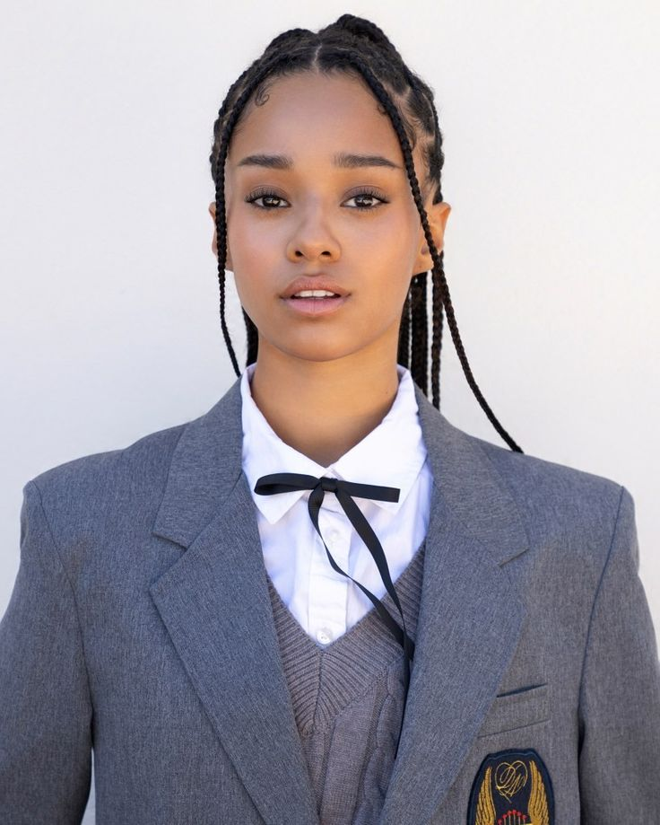

Manon Bannerman nasceu o 26 de junho de 2002 em Zurique, na Suíça. É atriz, conhecida pelo seu trabalho em Katseye.
Manon entrou na Dream Academy de uma forma diferente da maioria das participantes: ela foi recrutada diretamente pela HYBE/Geffen nas redes sociais, não passou inicialmente pelo concurso global. Isso explica por que ela apareceu “entrando em cena” já em janeiro de 2023 alguns meses após o início oficial do show.

Em essência, ela não competiu pelas vagas como as outras, mas foi recrutada e garantida como aposta estratégica pela gravadora por conta da sua star quality. Isso explica por que recebeu tratamento diferenciado e acabou ficando entre as seis finalistas que formaram o grupo KATSEYE.